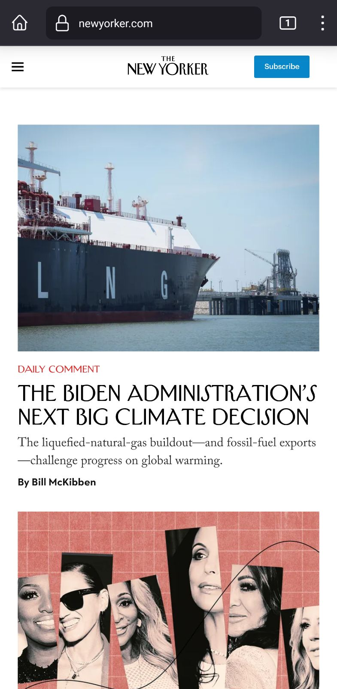
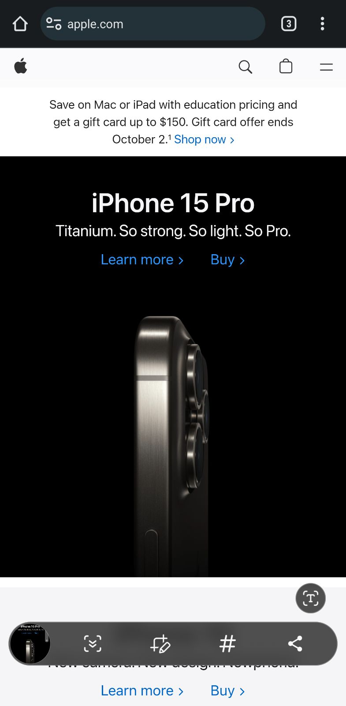

Hick's law states that the time required to reach a decision increases logarithmically with the number of choices. In other words, the more choices one is presented with, the longer they will take to reach a decision. In web and UX design, then, it is important to minimize the choices a user is presented with so that they don't feel overwhelmed. Google does this exceptionally well; as you can see on the google home page, users are basically presented with one choice: google search.
The New Yorker
https://www.newyorker.com/ White space, or negative space, is the empty space around the content of a design or web page. Its use organizes the web page and makes the design more clean and aesthetically pleasing for the user by preventing it from feeling cluttered. I feel the New Yorker's website exemplifies this principle. The white space around the header, for example, calls attention to the title, and sufficient space is provided in between articles to allow them to feel like separate entities on the page.
Apple
https://www.apple.com/ Contrast is the difference in color between two elements on a page. For web design, this usually means the lightness and darkness of colors. Contrast is important from an accessibility standpoint for text on a page because a high level of contrast between text and its background makes the text easier to read. Contrast is also important to draw attention to separate elements on a page. Apple's use of white text on a black background and black text on a white background makes the text as readable as possible. The use of black and white backgrounds for different sections also works to strikingly differentiate those sections.